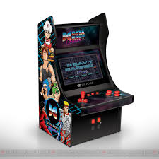
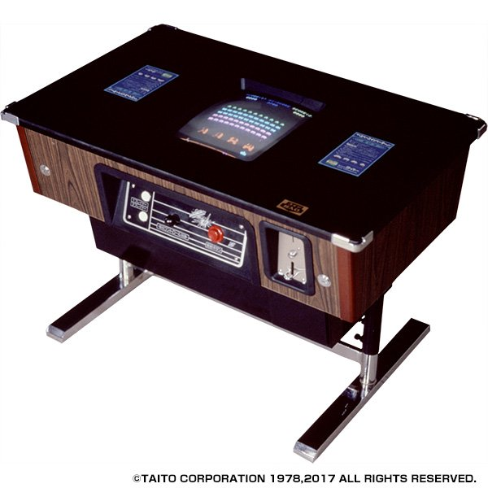
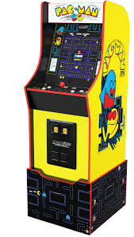
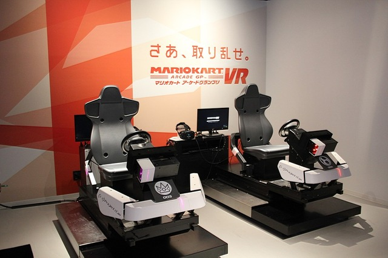

アーケードゲームの誕生
アーケードゲームは1970年代に登場し、最初の大ヒットは1972年の「ポン」でした。シンプルなテニスゲームで、多くの人々にゲームの楽しさを広めました。
黄金時代と代表作
1978年にリリースされた「スペースインベーダー」は、シューティングゲームの金字塔となり、アーケードゲームの黄金時代を築きました。その後、「パックマン」や「ギャラガ」などの名作が続き、世界中で大ブームとなりました。
 現代のアーケードゲーム
90年代以降、アーケードゲームは3Dグラフィックス技術の導入により大きく進化しました。 大型の筐体を使ったレースゲームや格闘ゲーム、音楽ゲームの登場で、多様なゲームジャンルが発展。 さらに、ネットワーク対戦やオンラインランキング機能の追加により、プレイヤー同士の競争や協力プレイも盛んになっています。 現代のゲームセンターでは、最新技術を駆使したVRゲームや体感型ゲームも楽しめるようになり、幅広い世代に支持されています。 一方でスマートフォンゲームの普及によってアーケードゲーム市場は縮小傾向にありますが、根強いファンの支えもあり、特定のジャンルでは今なお進化を続けています。
